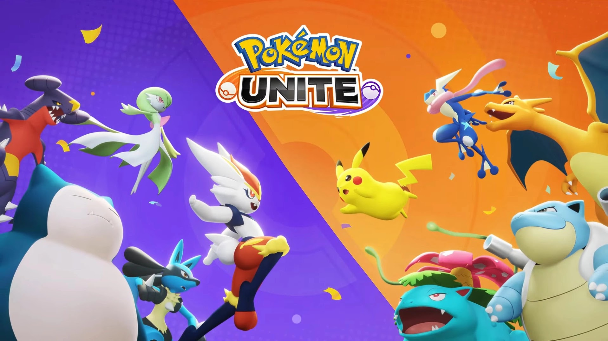

As diferenças entre Ataque e Ataque Especial em Pokémon Unite
por Lucas Avancini - 27/02/2024
O que é Ataque e Ataque Especial?
Pokémon Unite apresenta uma série de Pokémon para os jogadores se divertirem em diferentes classes, desde aqueles que gostam de causar mais dano até os que preferem defender. Embora as Classes do jogo sejam realmente bastante difundidas e conhecidas entre os jogadores, existe um aspecto técnico escondido no MOBA - muito comum nesse gênero, por sinal - que pode, muitas vezes, passar despercebido. Nessa matéria, você conhecerá um pouco mais sobre a diferença entre Ataque e Ataque Especial.
Se você já é um jogador antigo de Pokémon, deve ser familiarizado com os termos Ataque e Ataque Especial, conhecidos como Atk e Sp. Atk nas versões em inglês. Nos jogos originais da franquia, Pokémon que usam Ataque são aqueles que utilizam de ataques físicos, ou seja, precisam de contato físico com os oponentes para causar dano. No entanto, se o Pokémon consegue causar dano sem encostar no oponente, considera-se que ele é majoritariamente de Ataque Especial. Em Pokémon Unite, funciona exatamente da mesma forma.
No entanto, um lembrete importante: não confunda um Pokémon de Ataque com um Pokémon da classe Atacante. Os Pokémon de Ataque são justamente estes que utilizam de Ataque físico, e os Pokémon Atacantes são aqueles classificados dessa forma comparativamente a Defensor, Velocista, Suporte e Versátil. Temos uma matéria sobre todas as Classes de Pokémon Unite aqui mesmo na PBN.
Pense que, de forma simplória, os Pokémon que batem fisicamente (como se fosse literalmente um chute ou soco físico mesmo) utilizam de Ataque, portanto faz mas sentido que tenham movimentos deste tipo. Por outro lado, no entanto, existem os Pokémon que batem através de "poderes" ou "magias", sem contato físico, e portanto utilizam de Ataque Especial. Essa mesma lógica e dinâmica é adaptada para Pokémon Unite - inclusive, com estes mesmos nomes.
Nos jogos principais da franquia, não há sentido, por exemplo, você ensinar um movimento de Ataque. para um Pokémon que tenha suas estatísticas base de Ataque Especial extremamente elevadas. E da mesma forma, se o Pokémon tem majoritariamente ataques físicos, ou seja, boas estatísticas de Ataque, você não ensinará movimentos de Ataque Especial. É claro que podem existir exceções por conta de passivas dos movimentos, mas estamos falando apenas conceitualmente.
A diferença entre os jogos originais e Pokémon Unite é que, caso você esteja explorando uma das regiões da franquia, poderá literalmente escolher um movimento para um Pokémon mesmo que ele não seja o mais adequado. Em Pokémon Unite, todavia, os movimentos já são pré-selecionados e você pode apenas escolher entre uma opção limitada que o jogo já permite. Dessa forma, a chance de erro é nula.
Ataque
Para explicar mais sobre os Pokémon de Ataque, considere a imagem abaixo com o perfil de Lucario em Pokémon Unite. Note que, no canto esquerdo, há um retângulo que indica que ele é um Pokémon classificado no jogo como sendo de Ataque.
Na prática, isso significa dizer que a grande maioria dos movimentos que Lucario pode aprender durante as partidas são físicos, ou seja, dependem de contato com seus usuários. Quando você pensa no kit de habilidades dele, isso realmente faz sentido: Ataque Rápido, Velocidade Extrema, Soco Empoderador, Meteoro Esmagador Fúria de Ossos e Corpo-a-corpo, todos ataques físicos e que demandam de contato com seus oponentes. Você não vê por aqui, por exemplo, alguma "magia" ou "poderzinho" liberado por Lucario.
Ataque Especial
Diferente de Lucario, Gardevoir apresenta o escrito "Ataque Especial" ao lado esquerdo. Isso indica que ele não utiliza de ataques físicos para causar dano no jogo, uma vez que tem habilidades muito mais voltadas à magias ou os popularmente chamados "poderzinhos". Suas habilidades são Teleporte, Choque Psíquico, Visão do Futuro, Confusão, Psíquicoe e Explosão Lunar, todas classificadas como "Especial" no jogo.